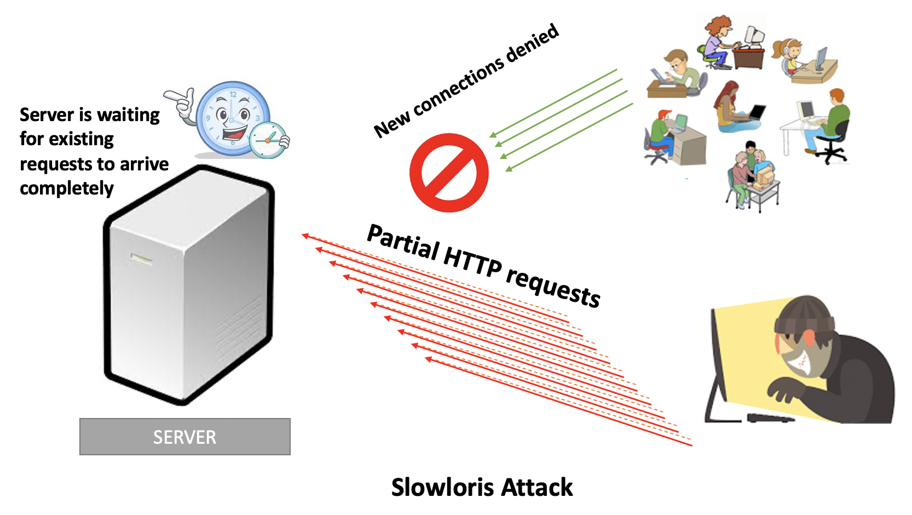

A Slowloris attack is an application-layer attack, which operates by utilizing partial HTTP requests. The attack functions by opening connections to a targeted Web server and then keeping those connections open as long as it can.

Slowloris keeps connections open by continuously sending partial Web requests. Since the request is never completed the server cannot process it and close the connection. Affected servers will keep these connections open, filling their maximum concurrent connection pool, eventually denying additional connection attempts from legitimate clients.
You can find the Slowloris attack tool on the attacker
node in /tmp/attacker/slowloris folder on SPHERE, as
well as in the included ZIP file lab-malware.zip.